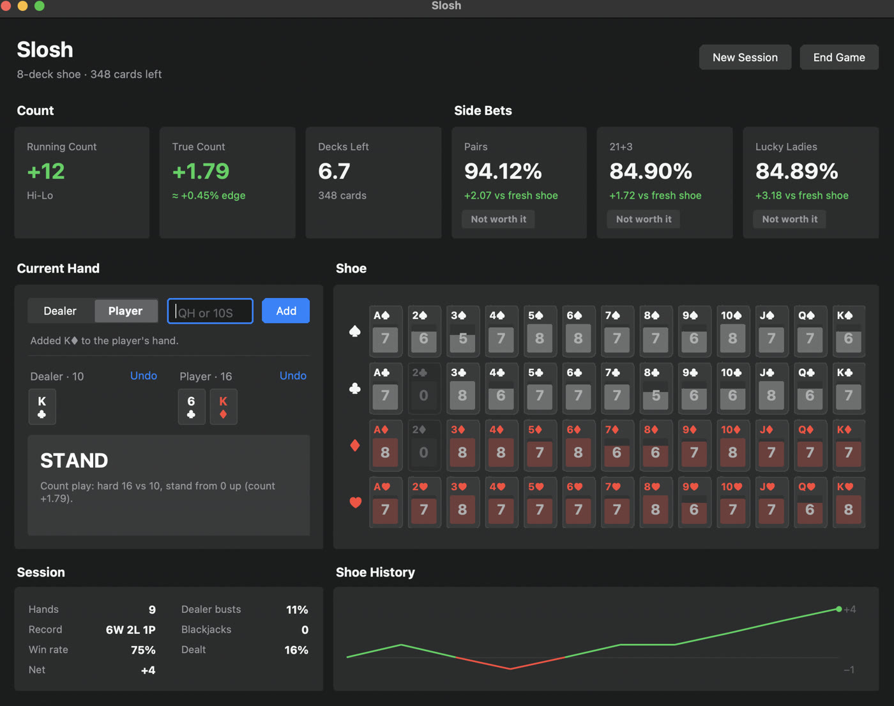

the idea
Blackjack side bets are designed to be terrible. Lucky Ladies — a bet that your first two cards total 20 — returns about 81.7% of your money off a fresh 8-deck shoe. But the printed odds assume a fresh shoe, and a shoe stops being fresh immediately. If the right cards are still clustered in what's left (say, a suspicious number of queens), the live odds can drift way up from the printed ones — past break-even. A side bet above 100% RTP is just a +EV game wearing a bad costume. Slosh exists to tell you the moment that happens.
how it works
It's a python desktop app you drive while watching a table. You key in cards as they're dealt and it maintains a count of every specific card remaining in the shoe — not just hi-lo buckets, the actual queen of hearts. From that, each side-bet module walks the combinatorics of drawing two cards from what's left (pure math.comb, no simulation) and folds in the paytable, so the screen shows live RTP next to the theoretical fresh-shoe RTP for lucky ladies, pairs, and the poker bet.
It also runs a conventional hi-lo true count on top, with basic-strategy advice that switches to the Illustrious 18 deviations once the count crosses the right thresholds. Charts sourced from Wizard of Odds, like all respectable degeneracy.


the queen bug
The best bug: lucky ladies pays on tiers — queen-of-hearts pair, matched 20, suited 20, any 20, any queen — and my first version put "queen + ten-value card" in the "any queen" bucket. But a queen plus a ten is a 20, which pays differently. The probability buckets weren't mutually exclusive and the RTP came out wrong. The fix commit is march 2025: "fixed except queen_probability". Combinatorics doesn't care about your intentions.
The README is still the original v1 planning scratchpad — a numbered UX flow that ends mid-sentence at step 8. Eighteen months later i came back and rebuilt the GUI into the version in the screenshots (+1,877 lines over two commits) and never touched the README. It stays. It's load-bearing honesty.
the discovery
The repo also holds a folder of reverse-engineering notes (filename: noets.txt, a typo i refuse to fix) from poking at the casino's web client. It turns out the client logs the complete dealer and player hands to the browser console at debug level — every card, as it's dealt. Which means the "type cards in by hand" UX could in principle be bypassed entirely by just reading the casino's own logs. The notes stayed notes.
stack
- app
- Python + tkinter, custom-drawn widgets with light/dark themes. ~1,400 lines.
- math
- Exact combinatorics via math.comb; hi-lo + Illustrious 18 strategy engine.
- status
- Working desktop app, last touched september 2026. Public on github.